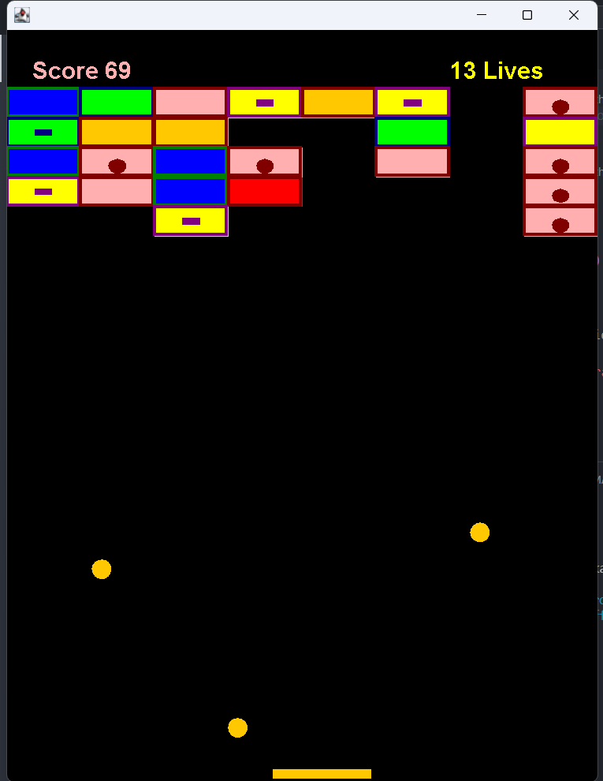
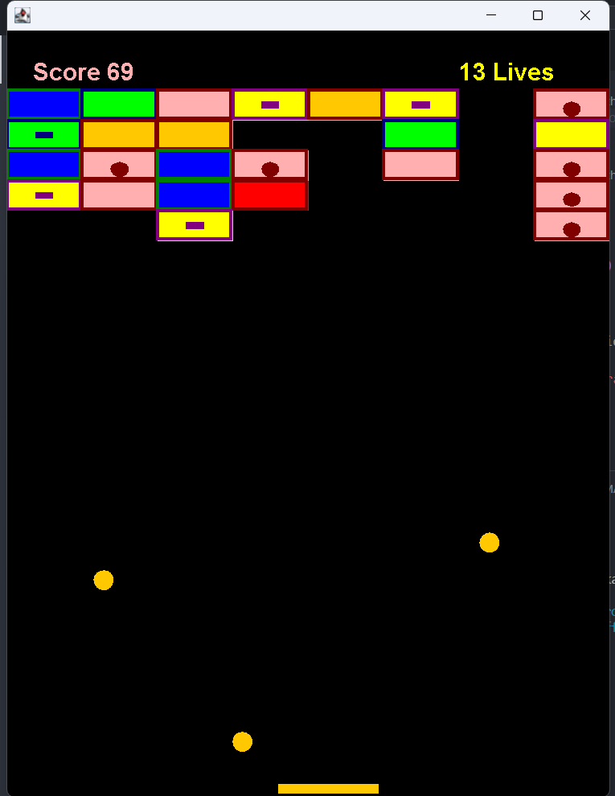
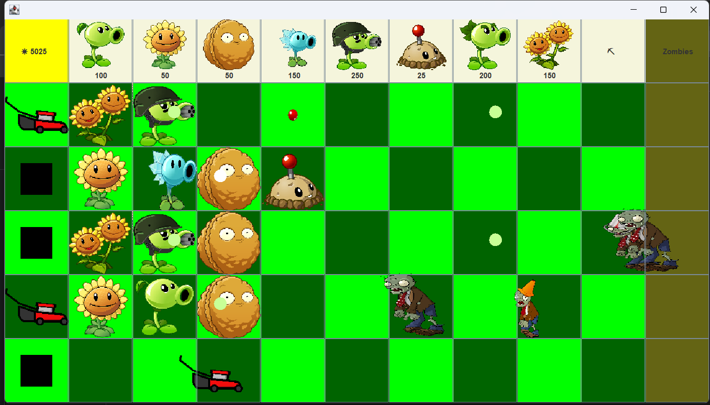

Breakout Game
This Java project showcases my understanding of object interaction and inheritance. I enhanced the classic arcade game Breakout by adding upgrades and implementing the paddle-ball collision mechanics.
This Java project showcases my understanding of object interaction and inheritance. I enhanced the classic arcade game Breakout by adding upgrades and implementing the paddle-ball collision mechanics.
A tower defense game developed as a clone of Plants vs Zombies, demonstrating my skills in inheritance, polymorphism, and debugging large projects. It was a significant learning experience in handling complex game mechanics and graphics.
